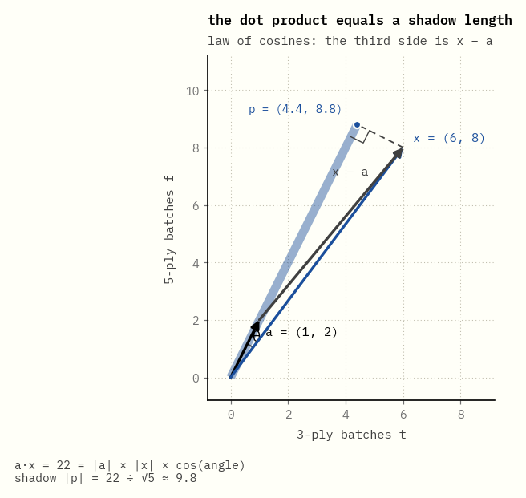
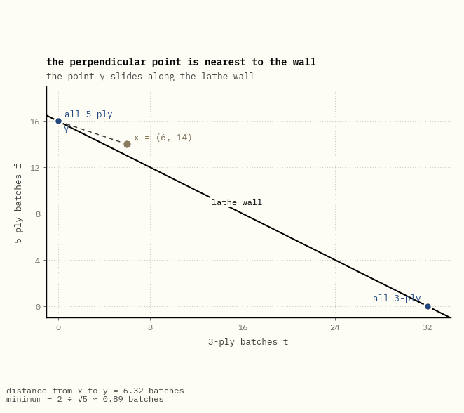
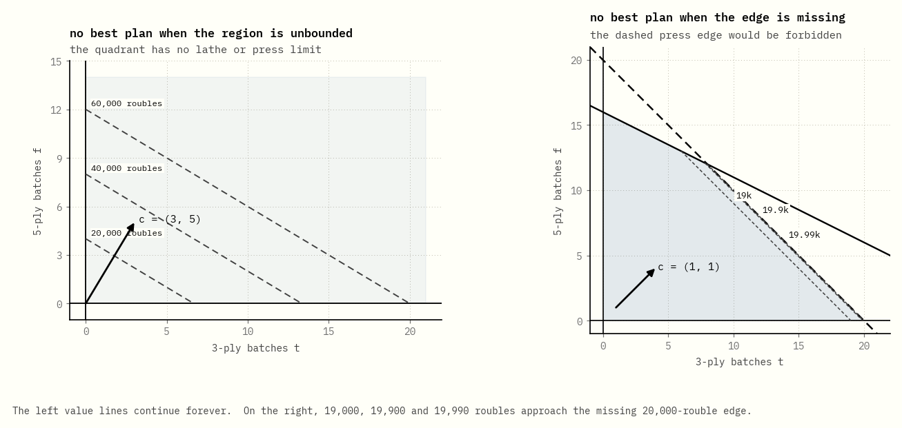
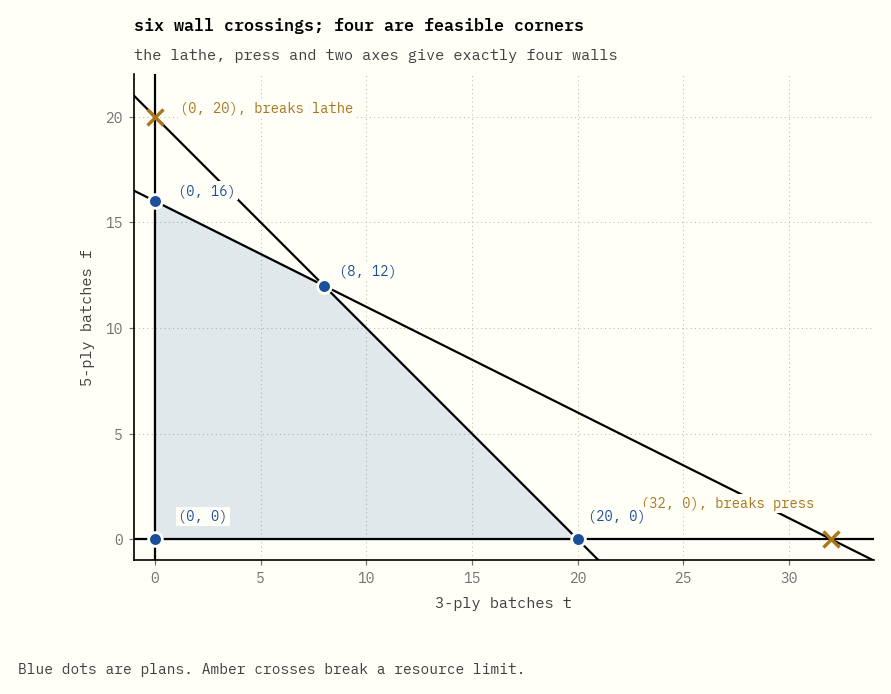

Corners, walls and prices
In 1938 the laboratory of the Leningrad Plywood Trust brought a question to the university's mathematicians. The Trust peeled logs into veneer on several kinds of machine, and each machine handled each kind of log at its own speed. The plan fixed the mix of products. How should the work be shared out so the machines turned out as much as possible?
The man they asked was Leonid Kantorovich, 26 and already a professor. He saw that the question was easy to state and awkward to answer. The possible plans form a many-sided shape, the best plan sits at one of its corners, and the standard advice was to work out the value at every corner and compare. That advice, he wrote later, "lost its force since the vertices number was enormous even in very simple problems."
So he stopped looking at corners. He looked for one number per resource, an exchange rate between machine time and output, that would prove a plan was best without comparing it to anything else. He called them resolving multipliers. They are the prices this guide keeps coming back to. Soviet officials attacked the work soon after it appeared; Anatoly Vershik, who studied under him, wrote that it threatened to bury its author "in the most direct sense".
Our mill is smaller than his. It makes two kinds of sheet, 3-ply and 5-ply, from 32 hours of lathe time and 20 hours of press time. The figures are ours, chosen so the arithmetic fits in your head; the question is his. Give it thousands of rows instead of two and it is an airline's crew schedule or a refinery's daily blend.
This guide follows the first eight chapters of Craig Tovey's Linear Optimization and Duality, with that one mill almost the whole way through. Every number on the page is computed in exact fractions by the code beside it, and a test fails if the prose and the code disagree.
0What this is

That walk is the simplex method. George Dantzig devised it in 1947 while planning for the US Air Force, knowing nothing of Kantorovich. It starts at a corner of the shape, moves along an edge to a neighbouring corner worth more, and stops when no neighbour is better. Here it takes two steps: from nothing made, to all 5-ply, to 8 batches of 3-ply and 12 of 5-ply.
Stopping there is a claim, not an observation. The walk compares a corner only with its neighbours, never with plans further away. That a corner which beats its neighbours beats every plan is a theorem, proved for this mill in chapter 2 and in general in chapter 12.
Dantzig did not expect it to work. He pictured it as the animation draws it, crawling round the outside of the shape when a path through the middle looked shorter, and he set it aside. He tested it only after other people's methods had done badly. It was fast, and it has been a workhorse of the subject ever since.
Watch the readout under the picture. In step 1 the lathe hours climb to 32 and stop climbing: the dot has hit the lathe wall. In step 2 the lathe stays at 32 while the press hours climb to 20: the dot slides along the lathe wall until it hits the press wall as well. Each step ends when one more resource runs out.
Getting there takes a few ideas, and each chapter adds one:
- Chapters 1 to 5 set the problem up: what the shape is, why the answer sits on a corner, how to turn a story into a problem, and Kantorovich's multipliers, the second problem hiding behind every linear program.
- Chapters 6 to 11 are about the shape itself: walls, corners, and what goes wrong when too many walls meet at one point.
- Chapters 12 to 17 are Dantzig's walk: the table that does its bookkeeping, how it avoids walking in circles, and how it finds somewhere to start.
- Chapters 18 to 20 come back to the multipliers: why they are right, how far they can be trusted, and how the big theorems fit together. In 1975 Kantorovich shared the Nobel prize in economics with Tjalling Koopmans, not with Dantzig.
Each idea comes as a picture first and a sentence second. The glossary at the end gives the textbook name for every plain word used here.
1A plan inside the walls
By the end of this page you will be able to look at one row of a linear program, such as 1 × t + 2 × f ≤ 32, and see an arrow, a wall at right angles to it, and which side of the wall is allowed.
The mill makes two kinds of sheet in batches. Each batch uses lathe and press hours, and has a fixed value:
| lathe | press | value | |
|---|---|---|---|
| one batch of 3-ply | 1 hour | 1 hour | 3,000 roubles |
| one batch of 5-ply | 2 hours | 1 hour | 5,000 roubles |
| the mill has | 32 hours | 20 hours |
A plan is two numbers: t batches of 3-ply and f batches of 5-ply. So every plan is a point on a sheet of paper, with 3-ply across and 5-ply up.

Each resource draws one straight line. Below the lathe line are the plans that use at most 32 lathe hours; on the line itself the lathe time runs out exactly. The same goes for the press. Making a negative number of batches is not allowed, so the two axes are walls as well. The shaded region is what is left: every plan the mill can actually carry out.
Take 6 batches of 3-ply and 14 of 5-ply. That uses 20 press hours, all the press time there is, which is fine. It also needs 6 + 28 = 34 lathe hours, two more than the mill has. The point lies just past the lathe line, and that is the whole check. The rest of this page explains why the line is straight, why it sits where it does, and why the allowed side is the origin's side.
One row is a dot product
A plan of t batches of 3-ply and f batches of 5-ply uses 1 × t + 2 × f lathe hours. Put the lathe time each sheet needs per batch into an arrow a = (1, 2), and the plan into an arrow x = (t, f). Multiplying matching entries and adding is the dot product, written a·x. Every row of a linear program is one dot product, and its arrow is the row of numbers in front of the variables.
The dot product has a second meaning, and it is the picture behind every wall. If θ is the angle between the two arrows, a·x = |a| |x| cos θ. The part |x| cos θ is the length of x's shadow on a: drop a line from the tip of x at right angles onto the line through a, and measure from the origin to where it lands.

Watch the two readouts under the picture.
- They agree in every frame. Multiply-and-add is the arithmetic, and length × length × cos θ is the same number seen as a picture.
- x never changes length, yet the lathe time it needs runs from 14.0 up to 31.3 and back down to 28.0. Its direction alone decides that.
- The shadow is longest, all 14 of x, when x points straight along a. Then θ = 0 and cos θ = 1.
So a·x = |a| × (the shadow of x on a). Since |a| = √5 never changes, the lathe time a plan uses is its shadow on a, times √5.
Why the two meanings agree

The two meanings are one fact, and the proof is the triangle in the picture. Its sides are a, x, and the arrow x − a from the tip of a to the tip of x.
Proof that a·x = |a| |x| cos θ. The law of cosines for this triangle says
|x − a|² = |a|² + |x|² − 2 |a| |x| cos θ.
The dot product gives the same side another way. Any arrow v has |v|² = v·v, which is Pythagoras: v·v adds up the squares of the entries. A dot product multiplies out like ordinary brackets, so
|x − a|² = (x − a)·(x − a) = x·x − 2 a·x + a·a = |x|² − 2 a·x + |a|².
The two right-hand sides are equal. Cancel |a|² and |x|², divide by −2, and what is left is a·x = |a| |x| cos θ. ∎
The same algebra finds the shadow. The foot of the drop is the point p = s a on the line through a, with s = a·x ÷ |a|². It is the right point because the drop x − p is at right angles to a:
a·(x − p) = a·x − s (a·a) = a·x − (a·x ÷ |a|²) |a|² = 0.
For x = (6, 8), a·x = 22, so p = (22 ÷ 5) × (1, 2) = (4.4, 8.8). The shadow's length is |p| = a·x ÷ |a| = 22 ÷ √5 ≈ 9.8, and that is |x| cos θ = 10 cos θ.
With three sheet types there is still a triangle, lying in the flat sheet through 0, a and x, and the proof is unchanged. With fifty there is no protractor, so the formula is turned round to define the angle: cos θ = a·x ÷ (|a| |x|). That is an honest cosine only if it lies between −1 and 1, and that is the first basic theorem this guide needs.
Theorem (Cauchy–Schwarz). For any two arrows, |a·x| ≤ |a| |x|, with equality exactly when one is a multiple of the other.
Proof. If a = 0 both sides are 0. Otherwise let p = s a be the foot of the drop from x, with s = a·x ÷ |a|² as above. The drop x − p is at right angles to p, so Pythagoras splits x into two perpendicular pieces:
|x|² = |p|² + |x − p|² ≥ |p|² = (a·x)² ÷ |a|².
Multiply by |a|² and take square roots: |a·x| ≤ |a| |x|. Equality needs |x − p| = 0, which means x = s a. ∎
In words: a shadow is never longer than the arrow that casts it. Every time this guide turns a dot product into a distance, this is the step that does it.
A wall is every plan with the same shadow
![The line through a = (1, 2) drawn from the origin. A solid line at right angles to it starts at the origin and slides outwards as the allowed lathe hours b grows from 0 to 40, leaving faint copies at 8, 16, 24, 32 and 40, evenly spaced along a. The side towards the origin is shaded and labelled a·x < b, the far side a·x > b. Three fixed plans report their lathe hours, 22, 32 and 40, and each is labelled more, on the line, or less as the line reaches and passes it. The line comes back to b = 32 and stays there, labelled the lathe wall.](chapters/01-inside-the-walls/levels.gif)
Watch the moving line and the three dots.
- The line never turns. Every line a·x = b is at right angles to a, whatever b is.
- A dot is on the line exactly when b equals the lathe time that plan uses. Before the line reaches it the dot uses more than b; after the line passes it, less.
- The faint copies are evenly spaced: each extra 8 lathe hours moves the line 8 ÷ √5 ≈ 3.6 further along a.
Why at right angles? Two plans on the same line use the same lathe time, so the move d from one to the other has a·d = 0. A dot product is zero only when cos θ = 0, so d is at right angles to a.
That is half of the claim: moves inside the wall are at right angles to a. The other half is that every such move stays inside the wall, so the wall is the whole line and not some smaller set inside it. Take a plan y on the wall and any move d with a·d = 0. Then a·(y + d) = a·y + a·d = 32 + 0 = 32, so y + d is on the wall too. Together: the wall is exactly y plus every move at right angles to a. In the plane those moves are the multiples of (2, −1), a line. With n sheet types, a·d = 0 is one equation in n unknowns, so its solutions fill a flat of n − 1 dimensions. That is a hyperplane.
![The lathe wall and the arrow a = (1, 2), with a tick on the line through a at 32 ÷ √5 = 14.3. Step 1: a plan slides along the wall from all 5-ply to 19 batches of 3-ply and 6.5 of 5-ply; its shadow, the blue bar, stays exactly at the tick and the readout stays at 32 hours. Step 2: the plan steps away from the origin, the bar grows past the tick and turns amber, and the plan is labelled over the lathe hours at 42 hours. Step 3: it steps back inside, the bar shrinks below the tick, and the plan is labelled lathe time to spare.](chapters/01-inside-the-walls/shadow.gif)
Watch the bar and the tick. While the plan stays on the wall the bar does not move, though the plan travels a long way. The bar moves only when the plan moves along a, and the lathe readout moves with it.
So the lathe wall a·x = 32 is every plan whose shadow on a is 32 ÷ √5 ≈ 14.3. It cuts the sheet into two halves: a·x < 32 on the origin's side and a·x > 32 on the far side. The arrow a points towards the side that uses more lathe time: a step s along a changes the lathe hours by a·(s a) = s |a|² = 5s, which is positive for every s > 0.
How far a plan is from a wall
The faint copies in the moving-line animation sit 8 ÷ √5 apart, not 8, and the lathe wall sits 32 ÷ √5 from the origin, not 32. Hours and distances are different units, and |a| converts one into the other.

Theorem (distance to a wall). Let g = a·x − b be how far a plan x is over the wall a·y = b, counted in hours. The point of the wall nearest to x is x − (g ÷ |a|²) a, and the distance is |g| ÷ |a|.
Proof. The point y* = x − (g ÷ |a|²) a is on the wall, since a·y* = a·x − (g ÷ |a|²)(a·a) = a·x − g = b. Its distance from x is |g| |a| ÷ |a|² = |g| ÷ |a|. Any point y of the wall has a·(x − y) = a·x − b = g, so Cauchy–Schwarz gives |g| ≤ |a| |x − y|, that is |x − y| ≥ |g| ÷ |a|. No point of the wall is closer than y*. ∎
For x = (6, 14): g = 34 − 32 = 2 hours, the nearest point of the wall is (6, 14) − (2 ÷ 5) × (1, 2) = (5.6, 13.2), and the distance is 2 ÷ √5 ≈ 0.89.
The proof says more than the formula. A step of length r changes the lathe hours by a·(step), which is at most |a| r by Cauchy–Schwarz, and exactly |a| r when the step points along a. So |a| = √5 is the most lathe time one unit of distance can add, and a is the direction that adds it fastest. That is why 8 extra hours move the line 8 ÷ √5 along a, and why 32 hours put the wall 32 ÷ √5 from the origin.
The press is the same with the arrow (1, 1), and its wall sits where the shadow is 20 ÷ √2 ≈ 14.1. More sheet types change only the number of entries in the arrows. With three products, a·x = 32 is a flat plane at right angles to a; with any number of products it is called a hyperplane, and each side of it a half-space. The region of possible plans is where all the half-spaces overlap.
The walls are flat because of two assumptions. A second batch of 5-ply uses exactly as much lathe time as the first, and the hours used by the two sheet types simply add up. Problems with those two properties are called linear programs. If later 5-ply batches needed less lathe time than earlier ones, the lathe line would bend, and the methods in this guide would no longer apply as they stand.
Dantzig first presented the idea to the Econometric Society in Madison, in September 1948. When he finished, Harold Hotelling, a prominent statistician, stood up: "But we all know the world is nonlinear." John von Neumann answered on Dantzig's behalf. The speaker had called his talk linear programming and carefully stated his axioms. "If you have an application that satisfies the axioms, well use it. If it does not, then don't." The two assumptions above are those axioms. Our mill satisfies them by construction. A real one satisfies them roughly, and much of the craft is knowing when roughly is enough.
Two facts about the whole region
Count the axes as rows too: t ≥ 0 is −t ≤ 0, with arrow (−1, 0), and f ≥ 0 is −f ≤ 0, with arrow (0, −1). Then the region is the set of plans x with a·x ≤ b for each of its four rows. A set cut out by finitely many rows like this is a polyhedron. Two facts about polyhedra carry the next chapter.
Convex: the segment between two plans is made of plans.
Proposition. If x and y are in a polyhedron, so is every point (1 − s) x + s y with 0 ≤ s ≤ 1.
Proof. For each row, a·((1 − s) x + s y) = (1 − s)(a·x) + s (a·y) ≤ (1 − s) b + s b = b. The step that keeps ≤ multiplies a·x ≤ b by 1 − s and a·y ≤ b by s, which is allowed because neither weight is negative. ∎
For example, halfway between 6 batches of 3-ply and 8 of 5-ply, and 8 and 12, is the plan (7, 10). It uses 27 lathe hours and 17 press hours, so it is a plan, as promised.
Closed: the region includes its own edge. A plan on the lathe wall uses exactly 32 hours, which is allowed. The precise way to say "includes its edge" is that the outside is open: every point outside has a small disc around it that lies entirely outside.
![A close-up of the lathe wall near the plan x = (6, 14), which is 2 lathe hours over. Step 1 draws a disc of radius 2 around x, the excess in hours: it crosses the wall, and the part inside the region is shaded amber. Step 2 shrinks the disc to radius 2 ÷ √5 ≈ 0.89, the true distance: it touches the wall at (5.6, 13.2), which uses exactly 32 hours. Step 3 shrinks it to half that, 1 ÷ √5 ≈ 0.45, and a probe runs round its edge with a readout of the lathe hours it uses, which never falls below 33. The final frame reads: every point of the disc is over the lathe hours, so the outside is open.](chapters/01-inside-the-walls/ball.gif)
Proposition. Every polyhedron is closed.
Proof. Take a point x outside. It breaks at least one row: a·x > b. Let ε = a·x − b > 0 be how far over it is, in hours, and let r = ε ÷ (2 |a|). Every point of the disc of radius r around x is x + r d for some d with |d| ≤ 1. By Cauchy–Schwarz, a·d ≥ −|a| |d| ≥ −|a|, so
a·(x + r d) = a·x + r (a·d) ≥ a·x − r |a| = b + ε − ε ÷ 2 = b + ε ÷ 2 > b.
Every point of the disc breaks the same row, so the whole disc is outside. The outside is open, which is what closed means. ∎
Each piece of r is there for a reason, and the animation shows what goes wrong without it.
- Why divide by |a|. ε is an excess in hours, and a radius is a distance. A step of length r can cut the lathe hours by up to |a| r, and cuts them by exactly that when it points straight back at the wall. So the excess is used up after a distance ε ÷ |a|, the distance to the wall from the theorem above. Using ε itself as the radius treats hours as distance and is too big by the factor |a|. For x = (6, 14), a disc of radius 2 reaches plans using 34 − 2√5 ≈ 29.5 hours, well inside the wall.
- Why the 2. Any radius below ε ÷ |a| works, and halving is the simplest choice that leaves room. At exactly ε ÷ |a| the disc touches the wall at (5.6, 13.2), which is a plan, so the closed disc is no longer outside. The 2 leaves a margin of ε ÷ 2 hours: at radius 1 ÷ √5 the worst point of the disc uses 34 − 1 = 33 hours.
- Why one row is enough. x only has to break one row to be outside, and the disc only has to keep breaking that same row. The other rows play no part.
Closed, together with bounded, is what guarantees in chapter 2 that a best plan exists at all.
The one thing to remember. A row a·x ≤ b measures each plan's shadow on the arrow a; the plans with shadow exactly b ÷ |a| form a wall at right angles to a, and the allowed side is the side a points away from.
2The best plan sits on a corner
By the end of this page you will see why, whenever a best plan exists, a corner is one of them, and you will have a proof that 8 batches of 3-ply and 12 of 5-ply are best which checks no other corner.
A batch of 5-ply is worth 5,000 roubles, more than the 3,000 roubles for 3-ply. The obvious plan is to make as much 5-ply as possible. A batch of 5-ply needs 2 lathe hours, so the lathe is gone after 16 batches of 5-ply. That plan is worth 80,000 roubles and leaves 4 press hours unused.
It is not the best plan. Swap one batch of 5-ply for two batches of 3-ply: the lathe time stays the same, the press time used goes up by one hour, and the value goes up by 1,000 roubles. Keep swapping until the press time runs out, and the mill reaches 8 batches of 3-ply and 12 of 5-ply, worth 84,000 roubles.
Value is a dot product too
Value is 3 × t + 5 × f, which is c·x for the value arrow c = (3, 5). Everything chapter 1 showed for the lathe arrow holds for c. Plans with the same value have the same shadow on c, so they lie on one line at right angles to c, and more value means a longer shadow along c.

Watch the dark part of the region.
- At 80,000 roubles all 5-ply is on the line, but the dark strip beyond the line is still part of the region. Those plans have more value, so all 5-ply is not best.
- The dark part shrinks as the line moves out, and it disappears at the last point the line touches. That point is the best plan.
- The last point is a corner. The picture suggests why: a straight line leaving a region with straight edges leaves at a corner or along an edge. A picture is not a proof, and the next three sections give one.
There is a best plan
The sweep took for granted that there is a last point to stop at. Some regions have none.

The left region is not bounded: 3t + 5f grows without end and every plan is beaten by another. The right region is not closed. With value t + f, which is just the press hours, every plan is worth less than 20,000 roubles and plans come as close to 20,000 as you like, but none is worth 20,000. Chapter 1's proposition that every polyhedron is closed is what rules this out.
Theorem (Weierstrass). A continuous function on a closed, bounded set has a largest value on it.
Proof. Let M be the least upper bound of the values, allowing M = ∞ for now. Pick points x1, x2, x3, … in the set whose values climb towards M: the k-th worth more than M − 1/k, or more than k if M = ∞. The points stay inside a bounded set, so some subsequence of them converges to a point x* (the Bolzano–Weierstrass theorem, a basic fact about the real numbers). The set is closed, so x* is in it. The function is continuous, so the values along the subsequence converge to the value at x*; they also converge to M. So M is finite and is reached at x*. ∎
For the mill each condition takes one line.
- Closed: the region is a polyhedron (chapter 1).
- Bounded: every plan has t ≥ 0, f ≥ 0 and t + f ≤ 20, so its length √(t² + f²) is at most t + f ≤ 20.
- Continuous: two plans x and y differ in value by |c·x − c·y| = |c·(x − y)| ≤ |c| |x − y| = √34 |x − y|, by Cauchy–Schwarz. Nearby plans have nearby values.
So the mill has a best plan. Weierstrass says nothing about where it is; the next two sections do.
What a corner is
So far "corner" has meant a point that looks pointed. The definition that proofs can use:
Definition. A corner of the region is a plan that is not the midpoint of two different plans.
(4, 14) is not a corner: it is halfway between all 5-ply, (0, 16), and (8, 12), both plans, along the lathe wall. (8, 12) is a corner, because of its two tight walls. Suppose (8, 12) were the midpoint of plans x and y. Both use at most 32 lathe hours and their average uses exactly 32, so both use exactly 32. The same goes for the press: both use exactly 20. But t + 2f = 32 and t + f = 20 have only one solution, (8, 12) itself, so x = y = (8, 12).
That argument works at any plan where two walls with non-parallel arrows are tight: the two equations pin the plan down, so it cannot be the middle of anything. The next proof needs the other direction.
Lemma. If a plan x is not a corner, some move d ≠ 0 keeps every wall that is tight at x tight: a·d = 0 for each such row.
Proof. x is the midpoint of two different plans, x + d and x − d, so d ≠ 0. For a row tight at x, a·x = b, so a·(x + d) ≤ b and a·(x − d) ≤ b say a·d ≤ 0 and −a·d ≤ 0. So a·d = 0. ∎
Some corner is best
![The mill with value arrow c = (1, 1), whose lines of equal value lie along the press wall, so every plan on the press edge is worth 20,000 roubles. A best plan x* = (14, 6) sits in the middle of that edge, where only the press wall is tight. Step 1 draws the move d = (1, −1) along the edge both ways, with readouts: press change 0, value change 0. Step 2 slides the plan one way: the lathe hours climb from 26 to 32 while the value stays at 20,000 roubles, and it stops at (8, 12), where the lathe wall is tight too. Step 3 slides the other way to (20, 0), where the axis f = 0 becomes tight. The final frame reads: a best plan that is not a corner slides, without losing value, to one that is.](chapters/02-best-is-a-corner/slide.gif)
Theorem. If the mill has a best plan, some corner is a best plan.
Proof. Let x* be a best plan. If it is a corner there is nothing to do. If not, the lemma gives a move d ≠ 0 with a·d = 0 for every row tight at x*.
The value does not change along d. The rows that are not tight at x* have hours to spare, so for a small enough step s > 0 both x* + s d and x* − s d are still plans (how small is worked out below). Neither is worth more than x*, so s (c·d) ≤ 0 and −s (c·d) ≤ 0. So c·d = 0: every plan on the line through x* along d is worth exactly as much as x*.
Slide until a new wall is tight. One entry of d is not zero, and moving along d or along −d makes that entry fall. t and f cannot go below 0, so sliding one way or the other some wall is reached. Stop at the first one. The plan there is still best, and it has a new tight wall. Its arrow a′ has a′·d ≠ 0, since sliding along d is what made it tight, while every arrow that was tight before has a·d = 0. So the new arrow is not parallel to any old one.
Repeat. In the plane, two tight walls with non-parallel arrows make a corner, so at most two slides end at a corner worth as much as x*. With n sheet types it takes at most n slides. ∎
How small a step is small enough comes straight from chapter 1. A row with σ hours to spare at x* is σ ÷ |a| from its wall, by the distance theorem, and the step s d covers a distance s |d|. So any s up to σ ÷ (|a| |d|) is safe for that row. That is the closedness proof run the other way, inside instead of outside.
Weierstrass gave the mill a best plan, and this theorem puts one at a corner.
Finding the corners
A corner has two tight walls with non-parallel arrows, so every corner is a crossing point of two of the four walls: lathe, press, t = 0 and f = 0. No two of their arrows are parallel, so each of the 4 × 3 ÷ 2 = 6 pairs crosses exactly once. Not every crossing is a plan.

| walls that cross | t | f | lathe hours | press hours | a plan? |
|---|---|---|---|---|---|
| lathe and press | 8 | 12 | 32 | 20 | yes |
| lathe and f = 0 | 32 | 0 | 32 | 32 | no, too many press hours |
| lathe and t = 0 | 0 | 16 | 32 | 16 | yes |
| press and f = 0 | 20 | 0 | 20 | 20 | yes |
| press and t = 0 | 0 | 20 | 40 | 20 | no, too many lathe hours |
| t = 0 and f = 0 | 0 | 0 | 0 | 0 | yes |
The four crossings that are plans are the four corners, and by the theorem one of them is best:
| corner | 3-ply batches t | 5-ply batches f | value |
|---|---|---|---|
| nothing made | 0 | 0 | 0 roubles |
| all 3-ply | 20 | 0 | 60,000 roubles |
| all 5-ply | 0 | 16 | 80,000 roubles |
| both walls at once | 8 | 12 | 84,000 roubles |
So the question "which of infinitely many plans is best?" becomes "which of four corners is best?". The count grows fast. With 50 sheet types and 100 walls, a crossing point is a choice of 50 walls out of 100, and there are up to C(100, 50) ≈ 1.01 × 10²⁹ of them to try. That is what the simplex method in chapter 12 is for.
How large is too large showed up early. In the autumn of 1947 Jack Laderman at the National Bureau of Standards tried the new method on George Stigler's diet problem: the cheapest mix of 77 foods that meets nine nutritional needs. Nine clerks with hand-operated desk calculators took about 120 working days between them. The answer, $39.69 a year at 1939 prices, beat Stigler's own careful guess by 24 cents.
A proof that checks no other corner
At 8 batches of 3-ply and 12 of 5-ply the lathe and press hours are both used up. Take any other plan x and the move d = x − (8, 12) that gets there. The move cannot use extra lathe time, since there is none, so (1, 2)·d ≤ 0; for the same reason (1, 1)·d ≤ 0. The question is what that says about the value.
![A close-up of the corner with 8 batches of 3-ply and 12 of 5-ply, where the lathe and press walls cross. Step 1 grows the arrow 2 × (1, 2) from the corner; step 2 adds 1 × (1, 1) from its tip; step 3 shows the value arrow c = (3, 5) ending at exactly the same point. Step 4 swings a move d through every direction that stays in the region, from along the lathe wall to along the press wall, while the readout gives the extra lathe hours (1, 2)·d, the extra press hours (1, 1)·d, and the extra value 2 × lathe + 1 × press, which never rises above zero.](chapters/02-best-is-a-corner/why_best.gif)
Steps 1 to 3 show that c = 2 × (1, 2) + 1 × (1, 1). So for any move d, c·d = 2 × ((1, 2)·d) + 1 × ((1, 1)·d). Watch the readout in step 4.
- The extra lathe and press hours are never positive. Every move that stays in the region uses less of at least one and more of neither.
- The extra value comes from those two numbers alone: twice the extra lathe hours plus the extra press hour.
- Along the lathe wall the lathe change is 0 and the value change equals the press change. Along the press wall it is the other way round, with the lathe change counted twice.
Two times something no bigger than zero, plus one times something no bigger than zero, cannot be positive, so no plan has more value than 84,000 roubles. This works because both multipliers, 2 and 1, are positive: in the picture, c points between the two walls' arrows. Those two numbers come back in chapter 4: 2,000 roubles per lathe hour and 1,000 per press hour.
Why positive matters shows at all 5-ply, (0, 16). The tight walls there are the lathe, arrow (1, 2), and the axis t = 0, arrow (−1, 0). The value arrow still splits along them, c = (3, 5) = 2.5 × (1, 2) − 0.5 × (−1, 0), but one multiplier is negative. A move that stays in the region makes (−1, 0)·d ≤ 0, and −0.5 times a negative number is positive, so the argument fails. It fails for a real reason. The move d = (2, −1), two batches of 3-ply for one of 5-ply, changes the lathe hours by 0 and (−1, 0)·d by −2, and gains 2.5 × 0 − 0.5 × (−2) = 1, that is 1,000 roubles. That is the swap from the start of this chapter. A negative multiplier marks the wall to step away from, and t = 0 is the wall the simplex walk in chapter 0 left on its second step.
This is the move Kantorovich made in 1938. He did not line the Trust's best plan up against the others. He found one multiplier per resource that made every alternative visibly worse, and he called them resolving multipliers. The simplex walk of chapter 0 produces the same two numbers at its last corner, as chapter 13 will show.
Turn the arrow and the corner moves

Read the panels left to right, top to bottom: c turns from steep to flat, and the best corner moves the same way, from all 5-ply to all 3-ply. In between, c = (1, 1) is the press wall's own arrow, so the line of equal value lies flat against the press wall and the whole edge ties. The best plans then fill an edge, but its two ends are still corners, so checking corners still finds the best value.
Change what each sheet is worth →
The one thing to remember. The best plan is the point of the region that reaches furthest along the value arrow c; when a best plan exists, one of the corners is best.
Glossary
| here | in Tovey and other textbooks |
|---|---|
| plan | feasible solution |
| the region of possible plans | feasible region |
| wall | constraint, or the hyperplane where it holds with equality |
| hours to spare | slack |
| tight wall | active (binding) constraint |
| line of equal value | level set of the objective |
| corner | extreme point, vertex |
| arrow a of a resource | the constraint's row, its normal vector |
| shadow on a | scalar projection, a·x ÷ |a| |
| the two halves either side of a wall | half-spaces |
| value arrow c | objective vector, gradient of the objective |
Further reading
Craig A. Tovey, Linear Optimization and Duality: A Modern Exposition, CRC Press, 2021. Chapters 1 and 2 cover what chapters 1 and 2 here do, with more examples.
Running the code
From the repository root, make bootstrap once. Then, in this folder,
make check re-renders every figure, rebuilds the page and runs the tests.